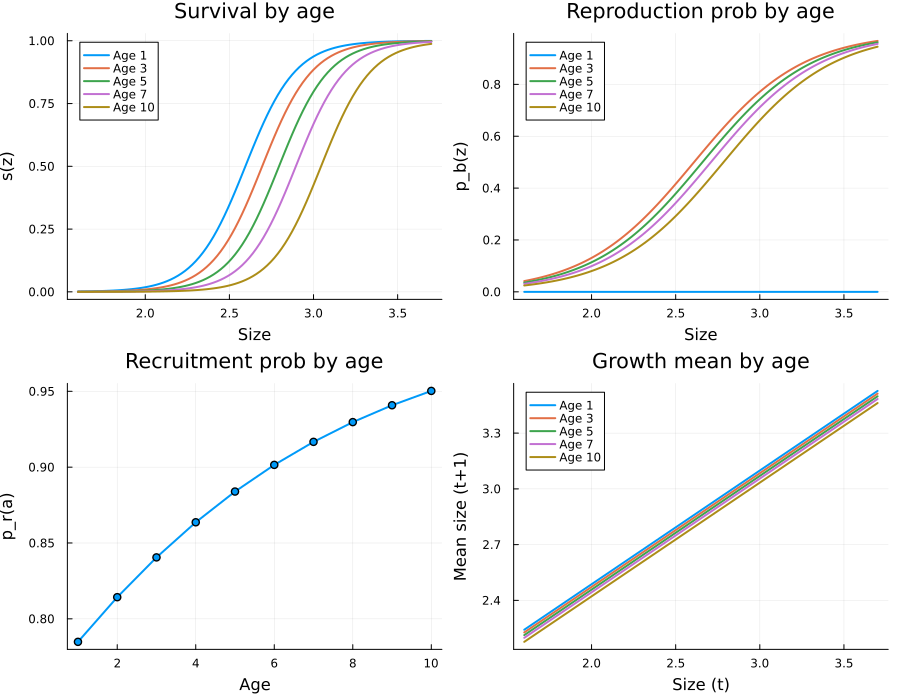
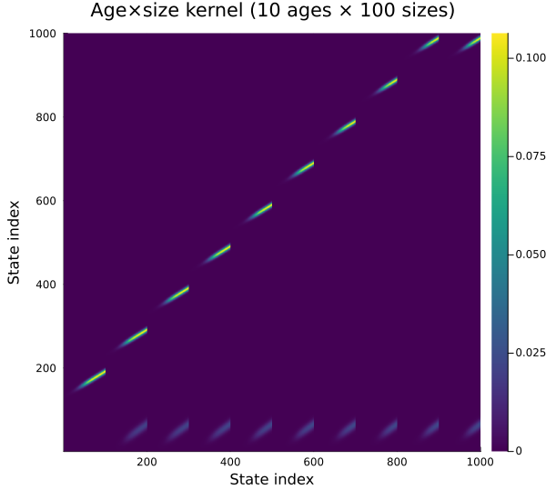
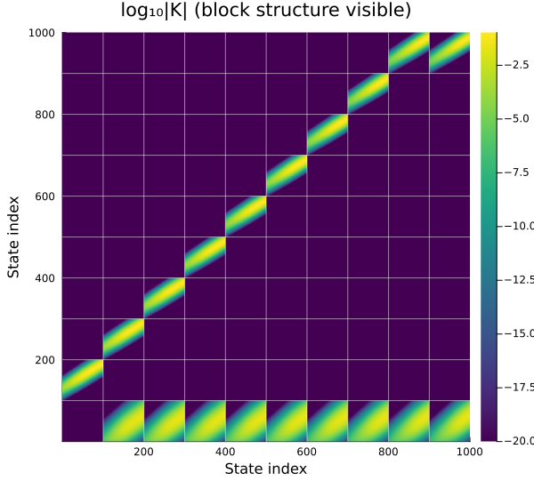
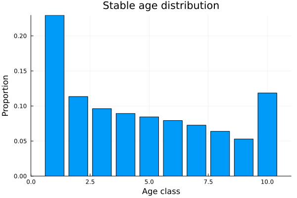
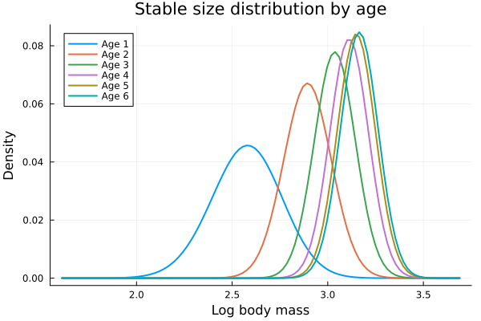
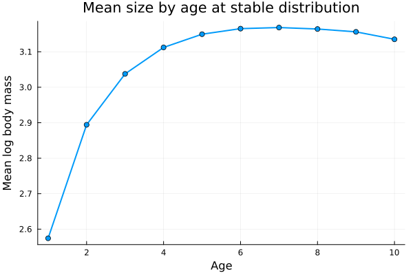
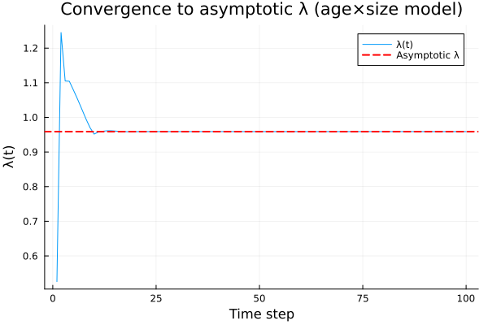
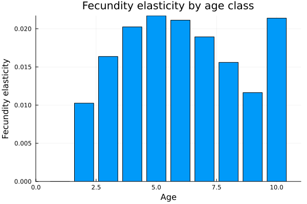

Age x Size IPM
Overview
In many populations, vital rates depend on both size and age. An age×size IPM tracks the joint distribution $n_a(z, t)$ — the density of individuals of age $a$ and size $z$ at time $t$.
The model is implemented as a block-structured matrix where:
- P kernels (survival-growth) appear on the sub-diagonal: age $a$ survivors move to age $a+1$
- F kernels (fecundity) appear in the first row: offspring from all ages enter age class 1
- The maximum age class is absorbing: survivors at max age stay at max age
This vignette models Soay sheep with age-dependent survival, growth, reproduction, and recruitment, following Ellner, Childs & Rees (Chapter 6).
Setup
using IntegralProjectionModels
using Distributions
using LinearAlgebra
using PlotsParameters
Age effects are linear on the logit (survival, reproduction, recruitment) or linear (growth) scale. The _a parameters give the per-year age effect.
# Survival (logistic: intercept + slope*z + age_effect*a)
surv_int = -17.0
surv_z = 6.68
surv_a = -0.334 # strong negative: senescence
# Growth (linear: intercept + slope*z + age_effect*a)
grow_int = 1.27
grow_z = 0.612
grow_a = -0.00724 # slight negative: growth slows with age
grow_sd = 0.0787
# Reproduction probability (logistic)
repr_int = -7.88
repr_z = 3.11
repr_a = -0.078 # declines with age
# Recruitment probability (logistic, no size effect)
recr_int = 1.11
recr_a = 0.184 # increases with age (experienced mothers)
# Recruit size (depends on maternal size only, NOT age)
rcsz_int = 0.362
rcsz_z = 0.709
rcsz_sd = 0.1590.159Domain and Age Structure
L = 1.6
U = 3.7
m = 100
max_age = 10
domain = ContinuousDomain(L, U, m)
age_struct = AgeStructure(max_age)
z = meshpoints(domain)
h = step_size(domain)0.021println("Size mesh: $m points on [$L, $U]")
println("Age classes: 1 to $max_age (age $max_age is absorbing)")
println("Total state space: $(m * max_age) = $m × $max_age")Size mesh: 100 points on [1.6, 3.7]
Age classes: 1 to 10 (age 10 is absorbing)
Total state space: 1000 = 100 × 10Age-Dependent Vital Rates
# Survival depends on size and age
function s_z(z, a)
return 1.0 / (1.0 + exp(-(surv_int + surv_z * z + surv_a * a)))
end
# Growth depends on size and age
function g_z1z(z_prime, z, a)
mu = grow_int + grow_z * z + grow_a * a
return pdf(Normal(mu, grow_sd), z_prime)
end
# Reproduction probability depends on size and age
# Age 0 (first year) individuals CANNOT reproduce
function pb_z(z, a)
if a <= 1 # age class 1 = newborns, cannot reproduce
return 0.0
end
return 1.0 / (1.0 + exp(-(repr_int + repr_z * z + repr_a * a)))
end
# Recruitment probability depends on age only
function pr_z(a)
return 1.0 / (1.0 + exp(-(recr_int + recr_a * a)))
end
# Recruit size depends on maternal size only
function c_z1z(z_prime, z)
return pdf(Normal(rcsz_int + rcsz_z * z, rcsz_sd), z_prime)
endc_z1z (generic function with 1 method)Visualize Age Effects
ages_plot = [1, 3, 5, 7, 10]
z_plot = range(L, U, length=100)
p1 = plot(title="Survival by age", xlabel="Size", ylabel="s(z)")
for a in ages_plot
plot!(p1, z_plot, [s_z(zi, a) for zi in z_plot], label="Age $a", linewidth=2)
end
p2 = plot(title="Reproduction prob by age", xlabel="Size", ylabel="p_b(z)")
for a in ages_plot
plot!(p2, z_plot, [pb_z(zi, a) for zi in z_plot], label="Age $a", linewidth=2)
end
p3 = plot(title="Recruitment prob by age", xlabel="Age", ylabel="p_r(a)")
plot!(p3, 1:max_age, [pr_z(a) for a in 1:max_age], marker=:circle, linewidth=2, label=false)
p4 = plot(title="Growth mean by age", xlabel="Size (t)", ylabel="Mean size (t+1)")
for a in ages_plot
plot!(p4, z_plot, [grow_int + grow_z * zi + grow_a * a for zi in z_plot],
label="Age $a", linewidth=2)
end
plot(p1, p2, p3, p4, layout=(2, 2), size=(900, 700))
Building Age-Specific Kernels
We use expand_age_kernels to construct the full block-structured matrix.
# P kernel for each age: survival(z, a) × growth(z', z, a)
function p_func(a)
PKernel(
CustomVitalRate(z -> s_z(z, a)),
CustomVitalRate((z_prime, z) -> g_z1z(z_prime, z, a)),
domain
)
end
# F kernel for each age: survival × reproduction × 0.5 × recruitment × offspring size
function f_func(a)
function fec_a(z_prime, z)
return s_z(z, a) * pb_z(z, a) * 0.5 * pr_z(a) * c_z1z(z_prime, z)
end
FKernel(CustomVitalRate(fec_a), domain)
end
# Expand to full block matrix
K_age = expand_age_kernels(p_func, f_func, age_struct, domain)1000×1000 Matrix{Float64}:
0.0 0.0 0.0 0.0 0.0 0.0 0.0 0.0 0.0 … 4.50386e-18 2.03367e-18
0.0 0.0 0.0 0.0 0.0 0.0 0.0 0.0 0.0 1.3731e-17 6.27724e-18
0.0 0.0 0.0 0.0 0.0 0.0 0.0 0.0 0.0 4.11381e-17 1.90407e-17
0.0 0.0 0.0 0.0 0.0 0.0 0.0 0.0 0.0 1.21119e-16 5.6757e-17
0.0 0.0 0.0 0.0 0.0 0.0 0.0 0.0 0.0 3.5043e-16 1.66257e-16
0.0 0.0 0.0 0.0 0.0 0.0 0.0 0.0 0.0 … 9.96358e-16 4.78593e-16
0.0 0.0 0.0 0.0 0.0 0.0 0.0 0.0 0.0 2.7839e-15 1.35387e-15
0.0 0.0 0.0 0.0 0.0 0.0 0.0 0.0 0.0 7.64394e-15 3.76366e-15
0.0 0.0 0.0 0.0 0.0 0.0 0.0 0.0 0.0 2.06255e-14 1.02818e-14
0.0 0.0 0.0 0.0 0.0 0.0 0.0 0.0 0.0 5.4691e-14 2.76027e-14
⋮ ⋮ ⋱
0.0 0.0 0.0 0.0 0.0 0.0 0.0 0.0 0.0 0.0635167 0.0739535
0.0 0.0 0.0 0.0 0.0 0.0 0.0 0.0 0.0 0.0469274 0.0570718
0.0 0.0 0.0 0.0 0.0 0.0 0.0 0.0 0.0 0.0322881 0.0410169
0.0 0.0 0.0 0.0 0.0 0.0 0.0 0.0 0.0 0.0206888 0.0274524
0.0 0.0 0.0 0.0 0.0 0.0 0.0 0.0 0.0 … 0.0123455 0.017111
0.0 0.0 0.0 0.0 0.0 0.0 0.0 0.0 0.0 0.00686051 0.0099323
0.0 0.0 0.0 0.0 0.0 0.0 0.0 0.0 0.0 0.00355044 0.00536909
0.0 0.0 0.0 0.0 0.0 0.0 0.0 0.0 0.0 0.00171114 0.0027029
0.0 0.0 0.0 0.0 0.0 0.0 0.0 0.0 0.0 0.000768012 0.00126717println("Full kernel size: ", size(K_age))
println(" = $(max_age) age classes × $(m) size classes")Full kernel size: (1000, 1000)
= 10 age classes × 100 size classesEigenanalysis
e_age = eigen(K_age)
λ_age = real(e_age.values[argmax(real.(e_age.values))])0.958934617569794println("Age×size model λ = ", round(λ_age, digits=6))Age×size model λ = 0.958935Comparison with Size-Only Model
The size-only model (no age structure) gives a different $\lambda$ because it does not account for age-specific vital rate variation.
# Size-only model: use average vital rates across ages
# Weight by stable age distribution (approximate as uniform for now)
function s_z_avg(z)
return mean([s_z(z, a) for a in 1:max_age])
end
function g_z1z_avg(z_prime, z)
return mean([g_z1z(z_prime, z, a) for a in 1:max_age])
end
function fec_avg(z_prime, z)
return mean([s_z(z, a) * pb_z(z, a) * 0.5 * pr_z(a) * c_z1z(z_prime, z)
for a in 1:max_age])
end
P_avg = PKernel(CustomVitalRate(s_z_avg), CustomVitalRate(g_z1z_avg), domain)
F_avg = FKernel(CustomVitalRate(fec_avg), domain)
K_avg = materialize(P_avg) + materialize(F_avg)
e_avg = eigen(K_avg)
λ_avg = real(e_avg.values[argmax(real.(e_avg.values))])0.9171889587609756println("Size-only (age-averaged) λ = ", round(λ_avg, digits=6))
println("Age×size λ = ", round(λ_age, digits=6))
println("Difference = ", round(λ_age - λ_avg, digits=6))Size-only (age-averaged) λ = 0.917189
Age×size λ = 0.958935
Difference = 0.041746The models give different $\lambda$ values because the age-averaged model does not properly account for the covariance between age and size in the stable population.
Block Matrix Structure
heatmap(K_age,
title="Age×size kernel ($(max_age) ages × $(m) sizes)",
xlabel="State index", ylabel="State index",
color=:viridis, size=(600, 550))
# Annotate the block structure
plt = heatmap(log10.(abs.(K_age) .+ 1e-20),
title="log₁₀|K| (block structure visible)",
xlabel="State index", ylabel="State index",
color=:viridis, size=(600, 550))
# Draw block boundaries
for a in 1:max_age-1
boundary = a * m + 0.5
vline!(plt, [boundary], color=:white, alpha=0.5, label=false)
hline!(plt, [boundary], color=:white, alpha=0.5, label=false)
end
plt
The block structure shows:
- First row block: F kernels (fecundity from all ages producing age-1 offspring)
- Sub-diagonal blocks: P kernels (survival-growth, aging from $a$ to $a+1$)
- Last diagonal block: P kernel for max age (absorbing: survivors stay at max age)
Stable Age-Size Distribution
idx_age = argmax(real.(e_age.values))
w_age = real.(e_age.vectors[:, idx_age])
w_age ./= sum(w_age)
# Extract age-specific distributions
age_dists = [w_age[(a-1)*m+1 : a*m] for a in 1:max_age]
age_totals = [sum(d) for d in age_dists]10-element Vector{Float64}:
0.2293787010363066
0.11350274194659911
0.09615670739132998
0.08931026460547686
0.08443962668297636
0.07925831833637517
0.07263720892644193
0.06389792105563981
0.0528724857584582
0.11854602426039604# Proportion in each age class
println("Stable age distribution:")
for a in 1:max_age
println(" Age $a: ", round(age_totals[a] * 100, digits=2), "%")
endStable age distribution:
Age 1: 22.94%
Age 2: 11.35%
Age 3: 9.62%
Age 4: 8.93%
Age 5: 8.44%
Age 6: 7.93%
Age 7: 7.26%
Age 8: 6.39%
Age 9: 5.29%
Age 10: 11.85%bar(1:max_age, age_totals,
xlabel="Age class", ylabel="Proportion",
title="Stable age distribution",
label=false)
# Age-specific size distributions (normalized within each age)
plt = plot(xlabel="Log body mass", ylabel="Density",
title="Stable size distribution by age")
for a in 1:min(max_age, 6)
if sum(age_dists[a]) > 1e-10
d = age_dists[a] ./ sum(age_dists[a])
plot!(plt, z, d, label="Age $a", linewidth=2)
end
end
plt
# Mean size by age
mean_by_age = Float64[]
for a in 1:max_age
if sum(age_dists[a]) > 1e-10
d = age_dists[a] ./ sum(age_dists[a])
push!(mean_by_age, sum(d .* z))
else
push!(mean_by_age, NaN)
end
end
plot(1:max_age, mean_by_age,
xlabel="Age", ylabel="Mean log body mass",
title="Mean size by age at stable distribution",
marker=:circle, linewidth=2, label=false)
Population Dynamics
# Initial population: all in age class 1 (newborns)
total_states = m * max_age
n0_age = zeros(total_states)
n0_age[1:m] .= 1.0 / m
# Iterate
n_steps = 100
u = Vector{Vector{Float64}}(undef, n_steps + 1)
u[1] = copy(n0_age)
lambdas_age = Float64[]
for t in 1:n_steps
u[t+1] = K_age * u[t]
push!(lambdas_age, sum(u[t+1]) / sum(u[t]))
end
plot(lambdas_age,
xlabel="Time step", ylabel="λ(t)",
title="Convergence to asymptotic λ (age×size model)",
label="λ(t)", linewidth=1)
hline!([λ_age], label="Asymptotic λ", linestyle=:dash, color=:red, linewidth=2)
Age-Specific Contributions
# Which age classes contribute most to population growth?
# Compute elasticity to each age's F kernel
K_total = K_age
e_total = eigen(K_total)
idx = argmax(real.(e_total.values))
w_r = real.(e_total.vectors[:, idx])
w_r ./= sum(w_r)
e_left = eigen(transpose(K_total))
idx_left = argmax(real.(e_left.values))
v = real.(e_left.vectors[:, idx_left])
v ./= v[1]
# Sensitivity matrix
S_age = (v * w_r') ./ dot(v, w_r)
# Fecundity elasticity by age
fec_elas_by_age = Float64[]
for a in 1:max_age
F_a = materialize(f_func(a))
# F_a contributes to rows 1:m, columns (a-1)*m+1:a*m
r_range = 1:m
c_range = (a-1)*m+1 : a*m
E_Fa = (K_total[r_range, c_range] .* S_age[r_range, c_range]) ./ λ_age
push!(fec_elas_by_age, sum(E_Fa))
end
bar(1:max_age, fec_elas_by_age,
xlabel="Age", ylabel="Fecundity elasticity",
title="Fecundity elasticity by age class",
label=false)
Summary
In this vignette we:
- Built an age×size IPM for Soay sheep with age-dependent vital rates
- Used
AgeStructureandexpand_age_kernelsto automatically construct the block matrix - Visualized age effects on survival (senescence), growth (slowing), and reproduction (decline)
- Computed $\lambda$ and compared with the size-only model
- Examined the stable age-size distribution showing how size distributions shift with age
- Computed age-specific fecundity elasticities